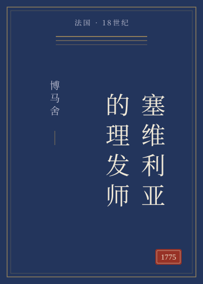
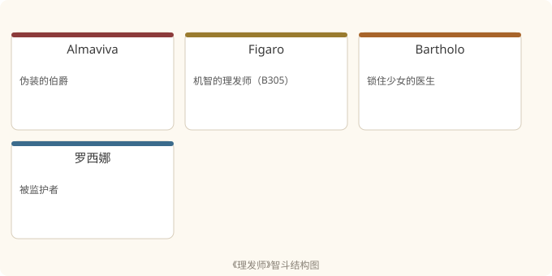

塞维利亚的理发师
一、基本信息
| 作者 | 博马舍 |
|---|---|
| 成书/出版 | 1775年演出并出版（Britannica：performed and published in 1775） The Barber of Seville (play by Beaumarchais) — Encyclopaedia Britannica（百科全书） |
| 国别/地区 | 法国 |
| 时代 | 近代 · 18世纪 |
| 体裁 | 四幕喜剧 |
| 语言 | 法语 |

《理发师》智斗结构图（主题·结构图）
二、创作背景
Britannica（B305）：'four-act farcical drama'，'performed and published in 1775'；情节：Almaviva伯爵爱Rosine（Bartholo医生欲娶之而将其锁于家）——伪装（乐师Alonzo）与Figaro的帮助下胜出并完婚。
'The play achieved great popularity for its ingeniously constructed plot and lively wit'（B305）；'was the basis of the 1816 opera' Il barbiere di Siviglia by Rossini（B305）。
三、内容脉络
Almaviva的伪装求爱：音乐师Alonzo、醉兵——Figaro的机智（B305 语境）。
Bartholo的阻挠与婚约的达成（B305 语境）。
四、主要人物表
| 人物 | 身份 | 说明 |
|---|---|---|
| 费加罗 | 理发师 | （B305） |
| 阿玛维瓦伯爵 | 伯爵 | （B305） |
| 罗西娜 | 少女 | （B305：Rosine） |
五、主题与艺术特点
- '精巧的情节与活泼的机智'（B305）。
- 仆人的智慧（Figaro——B305 语境）。
- 启蒙时代的反讽（通说待核）。
六、影响与评论
- Britannica：'The play achieved great popularity for its ingeniously constructed plot and lively wit'（B305）。
The Barber of Seville (play by Beaumarchais) — Encyclopaedia Britannica（百科全书） - Britannica：1816年罗西尼歌剧的基础（B305）。
The Barber of Seville (play by Beaumarchais) — Encyclopaedia Britannica（百科全书）
七、阅读建议
难点
- 法语喜剧对白。
- 费加罗三部曲顺序。
- 《塞维利亚的理发师》（收于博马舍戏剧集，通说待核）。
- 法文原版（公有领域）。
费加罗三部曲之首（理发师→婚礼→有罪的母亲）。
八、待核实
- 1775年2月首演（Comédie-Française说）核对。
- Rosine/Bartholo人名核对。
- 《费加罗的婚礼》1784年说待核。
本页主要来源
博马舍的其他收录作品：塞维利亚的理发师